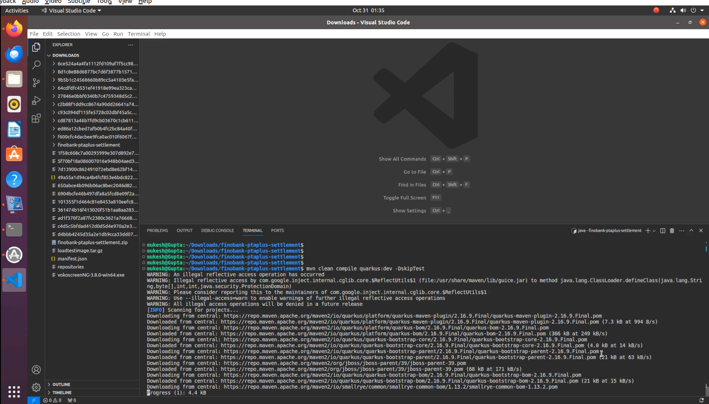

1:- Task requirement:-
To show the result of response time in grafana with the help of locust tool.
2:- Load testing:-
Load Testing is a non-functional software testing process in which the performance of software application is tested under a specific expected load. It determines how the software application behaves while being accessed by multiple users simultaneously.
3:-Environmental detail:-
OS: Ubuntu 20.04
Podman 3.4.2
4:- System configuration:-
CPU - 4
Storage -16 GB
5:- List of tools and technologies:-
Grafana Postgres Locust
6:-Definition of tools:-
(a). Grafana is a multi-platform open source analytics and interactive visualisation web application. It provides charts, graphs, and alerts for the web when connected to supported data sources. It can be easily installed using Docker or Docker Compose. PostgreSQL: Post
(b). PostgreSQL, also known as Postgres, is a free and open-source relational database management system emphasising extensibility and SQL compliance. Locust:
(c). Locust is an open-source load-testing tool. Load testing is a type of software testing that is conducted to check the tolerance/behaviour of the system under a specific expected load. Command for the setup or configuration
Step:- 1
Follow this step
sudo apt update
The sudo apt update command is used in Debian-based Linux distributions, such as Ubuntu, to update the package repository information on your system.
echo "deb https://download.opensuse.org/repositories/devel:/kubic:/libcontainers:/stable/xUbuntu_20.04/ /" | sudo tee /etc/apt/sources.list.d/devel:kubic:libcontainers:stable.list

curl -L "https://download.opensuse.org/repositories/devel:/kubic:/libcontainers:/stable/xUbuntu_20.04/Release.key" | sudo apt-key add -

sudo apt update
sudo apt upgrade
sudo apt -y install podman
sudo: Superuser "do." It is used to execute a command with administrative or superuser privileges.
apt: Advanced Package Tool. It is a package management system used by Debian and Debian-based distributions.
install: The command used to install new packages.
upgrade This is a command used with apt-get to upgrade installed packages. When you run apt-get upgrade, it downloads and instals the latest versions of all currently installed packages on your system.
-y The -y is like saying, "Yes, go ahead!" It tells the magic tool to answer "Yes" to any questions it might ask during the installation, so you don't have to type "Yes" manually.
podman --version

Step 2:-
sudo apt install python3-pip

sudo: Superuser "do." It is used to execute a command with administrative or superuser privileges.
apt: Advanced Package Tool. It is a package management system used by Debian and Debian-based distributions.
install: The command used to install new packages.
python3-pip: The name of the package you want to install. In this case, it's the Python 3 version of the pip package.
Step 3:-
pip3 install locust
pip3: The package installer for Python3
install: The command to install a Python package.
locust: The name of the package you want to install (in this case, Locust).
Step 3:-
pip3 install locust_plugins

pip3: The package installer for Python3
install: The command to install a Python package.
locust_plugins: The name of the package you want to install (in this case, the Locust plugins package).
Step 4:-
pip3 show locust

pip3: The package installer for Python 3. It is a command-line tool for installing and managing Python packages.
show: A subcommand of pip used to display information about one or more installed packages.
locust: The name of the package for which you want to retrieve information. In this case, it's the Locust package
Step 5:-
sudo mkdir locust
ls
sudo touch locustfile.py
ls
Step 6:-
hostname -I

Change the IP address , according to your System IP
Step 7:-
sudo apt install vim
Step 8:-
sudo vim locustfile.py

Step 9:-
from locust import HttpUser, constant, task, between, TaskSet, SequentialTaskSet, events
import locust_plugins
@events.test_start.add_listener
def on_test_start(environment, **kwargs):
print("A new test is starting")
@events.test_stop.add_listener
def on_test_stop(environment, **kwargs):
print("A new test is ending")
class InactiveUsers(SequentialTaskSet):
@task
def helloworld(self):
with self.client.get("/hello", catch_response=True, name="helloworld", json={} , headers={"accept": "application/json", "Content-Type": "application/json"}) as response:
if response.status_code != 200:
response.failure("Failed to get item: StatusCode " + str(response.status_code))
else:
json_response_data = response.json()
class MyInactiveUsers(HttpUser):
wait_time = between(1,2)
tasks = [InactiveUsers]
host = "http://192.168.122.226:8080"
Step 10:-
cd Download/
ls
unzip finobank-ptaplus-settlement.zip

Step 11:-
ls
tar -zxvf loadtestimage.tar.gz
Step 12:-
podman load -i loadtestimage.tar.gz

Step 13:-
podman images

Step 14:-
sudo apt update
sudo snap install --classic code
code .
Step 15:-
ls

cd finobank-ptaplus-settlement/

sudo apt install maven

Step 16:-
mvn clean compile quarkus:dev -DskipTest

Step 17:- Change the IP address , according to your System IP
mvn clean compile quarkus:dev -DskipTests -Dquarkus.http.host=192.168.122.82
Step 18:- Go to main terminal
cd
locust -f locustfile.py
Step 19:-
podman run -itd --name loadtesting -p 8089:8089 -v <Directory >:/mnt/locust localhost/loadtest:v1 -f /mnt/locust/locustfile.py
Step 20:-
podman ps

locust -f locustfile.py
locust: This is the command you use to run the Locust tool. It's like telling your computer to start the "Locust" program. -f locustfile.py: This part tells the "Locust" program which test plan file to use for the load test. Think of the test plan file as a set of instructions that tell the tool what actions to perform during the load test. The -f stands for "file," and locustfile.py is the name of your test plan file.
Step 21:-
Go to the browser type localhost:8089
Step 22:-
podman pod create --name timescale --publish 5432:5432 --publish 3000:3000
podman command-line tool is used to manage pods on your system.
pod subcommand indicates that you are working with pods, rather than individual containers.
create subcommand is used to create a new pod.
--name timescale sets the name of the new pod to "timescale". This is a user-defined label that can be used to refer to the pod in subsequent commands.
--publish 5432:5432 maps port 5432 on the host system to port 5432 within the pod. This enables external services to communicate with a PostgreSQL database that may be running inside the pod.
--publish 3000:3000 maps port 3000 on the host system to port 3000 within the pod. This enables external services to communicate with a Grafana application that may be running inside the pod.
podman pod ps
cd
cd Downloads/
mkdir -p ~/postgres/data/ ~/grafana/data
vim script.sh
Put this script
#!/bin/bash
# Create the first directory
mkdir -p /home/user/Downloads/postgres/data
# Create the second directory
mkdir -p /home/user/Downloads/grafana/data
# Create a postgres container, give it the desired environment variables,
# attach it to the created pod
podman run -dt \
--pod timescale \
--name timescale-postgres \
-e POSTGRES_PASSWORD=password \
-e TIMESCALEDB_TELEMETRY=off \
-v /home/user/Downloads/postgres/data:/var/lib/postgresql/data \
cyberw/locust-timescale:4
# Create the grafana container, give it the desired environment variables,
# importantly PGHOST, attach it to the created pod
podman run -dt \
--pod timescale \
--name timescale-grafana \
-e GF_AUTH_DISABLE_LOGIN_FORM=true \
-e GF_AUTH_ANONYMOUS_ENABLED=true \
-e GF_AUTH_ANONYMOUS_ORG_ROLE=Admin \
-e GF_SECURITY_ALLOW_EMBEDDING=true \
-e GF_LOG_LEVEL=warn \
-e PGHOST=localhost \
-v /home/user/Downloads/grafana/data:/var/lib/grafana \
cyberw/locust-grafana:2
pwd
*Step 25:-
chmod 775 script.sh
Step 26:-
bash script.sh
Step 27:-
podman ps
podman command-line tool is used to manage pods on your system.
ps subcommand lists the current status of all running pods.
Step 28:-
cd ~/grafana/
Step 29:-
sudo apt install jq
Step 31:-
Vim pipeline.sh
Put this script
GRAFANA_CRED="admin:admin"
GRAFANA_HOST="http://192.168.1.101:3000"
GRAFANA_OVERWRITE=false
DS_NAME="locust_timescale"
PGHOST="postgres"
PGPORT="5432"
curl -u "$GRAFANA_CRED" $GRAFANA_HOST/api/datasources -XPOST -H "Accept: application/json" -H "Content-Type: application/json" -d '{"access": "proxy","basicAuth": false,"basicAuthPassword": "","basicAuthUser": "","database": "postgres","isDefault": false,"jsonData": {"postgresVersion": 1200,"sslmode": "disable", "timescaledb": true},"name": "'$DS_NAME'","orgId": 1,"password": "","readOnly": false,"secureJsonData": {"password": "password"},"type": "postgres","url": "'$PGHOST':'$PGPORT'","user": "postgres","version": 3,"withCredentials": false}'
ds=(10878 14423 14422 15419);
for d in "${ds[@]}"; do
echo -n "Processing $d: "
j=$(curl -s -k -u "$GRAFANA_CRED" $GRAFANA_HOST/api/gnet/dashboards/$d | jq .json)
echo "{\"dashboard\":"${j}",\"overwrite\":$GRAFANA_OVERWRITE,\"inputs\":[{\"name\":\"DS_LOCUST\",\"type\":\"datasource\", \"pluginId\":\"postgres\",\"value\":\"$DS_NAME\"}]}" > payload.json
curl -v -k -u "$GRAFANA_CRED" -H "Accept: application/json"\
-H "Content-Type: application/json"\
-d @payload.json \
$GRAFANA_HOST/api/dashboards/import; echo ""
done
check_grafana_ready
create_datasource
import_dashboards
Step 32:-
bash pipeline.sh
Step 33:-
cd
podman exec -it timescale-postgres bash
Step 34:-
psql -U postgres
Step 35:-
\dt
Step 36:-
select * from user_count;
Step 37:-
podman run -itd --name loadtesting -p 8089:8089 -v /home/sam:/mnt/locust localhost/loadtest:v1 -f /mnt/locust/locustfile.py --timescale --grafana-url=http://192.168.122.82:3000 --pogport=192.168.122.82 --pgport=5432 --pgpassword=password --pguser=postgres
Step 38:-
Run the load test with grafana and timescale-DB Locust ui exposed to the localhost:8089 Start a new test with the number of users and spawn rate.
Step 39:- You can add panels in grafana to get the graphical view of the responses.